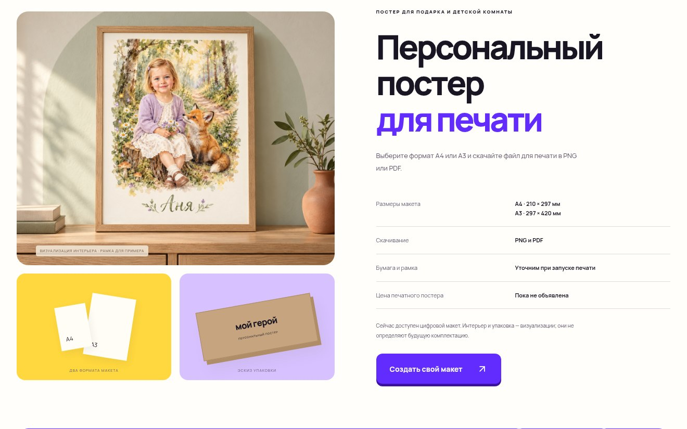
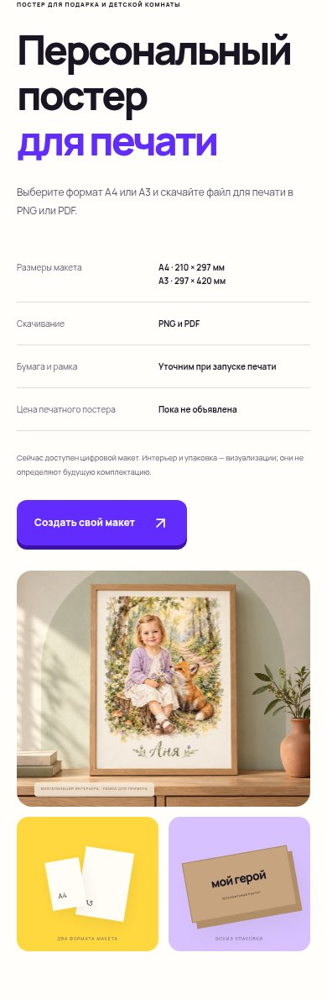

МОЙ ГЕРОЙ · 29 ОКТЯБРЯ 2026
Новый пример постера
в интерьере
В блоке «Персональный постер для печати» вместо нарисованного интерьера размещено фотореалистичное изображение из присланного архива. Композиция, лицо ребёнка и имя «Аня» сохранены. Изображение показано целиком на телефоне и компьютере.
Открыть обновлённый блок ↗Компьютер


Телефон

